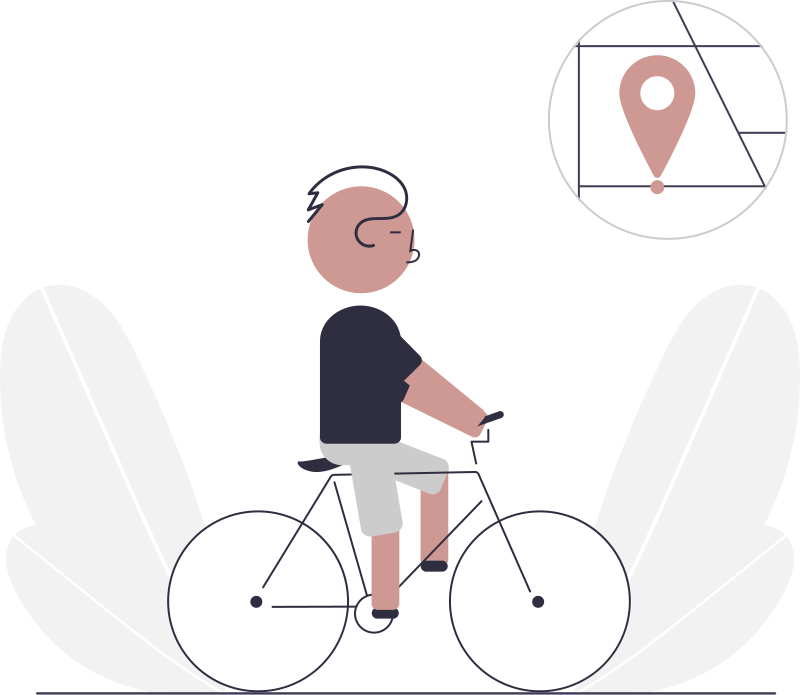
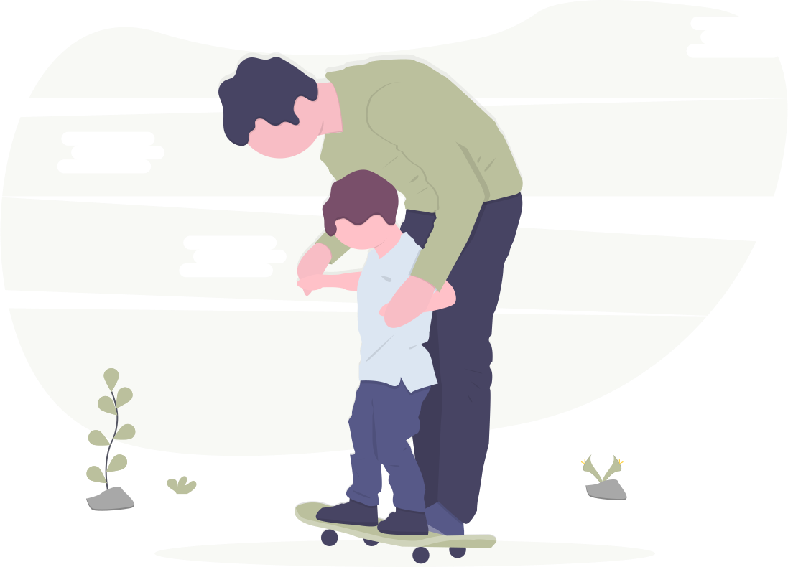

I think a great deal about computers... sometimes I try to
actaully use them
When I am tired of sitting in front of computer, I like to
get outside. Sometimes I ride a bike, sometimes I hike,
sometimes I lay in the grass. Inside is nice; outside is
really nice.


When I think that I am tired from work, then I go home and
realize how exhausting it is to be a father. Kids are great!
© None
(seriously, who would want to copy this?)